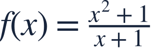
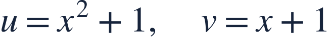
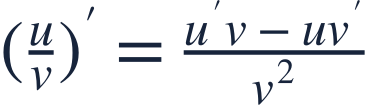
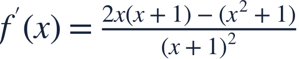
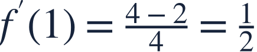
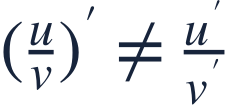
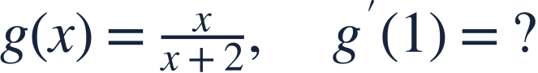

The quotient rule
몫의 법칙

For a quotient, the subtraction order matters.
몫을 미분할 때는 뺄셈 순서가 중요합니다.

For a quotient, the subtraction order matters.
몫을 미분할 때는 뺄셈 순서가 중요합니다.

The denominator must stay nonzero; here x≠−1.
분모는 0이 아니어야 하므로 여기서는 x≠−1입니다.

Differentiate the top first, subtract the other contribution, then divide by the bottom squared.
분자를 먼저 미분한 항에서 다른 기여를 빼고 분모의 제곱으로 나눕니다.
Find each derivative before assembling the quotient rule.
각 도함수를 구한 뒤 몫의 법칙에 넣습니다.

Parentheses protect the entire subtracted term.
괄호를 써서 빼는 항 전체를 보호합니다.

Evaluate numerator and denominator consistently at the same input.
분자와 분모에 같은 입력값을 일관되게 대입합니다.

Do not divide the numerator derivative by the denominator derivative.
분자의 도함수를 분모의 도함수로 나누면 안 됩니다.

Apply the quotient rule before evaluating.
몫의 미분법을 적용한 뒤 값을 구하세요.